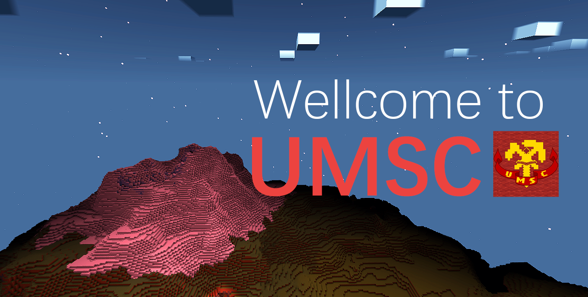
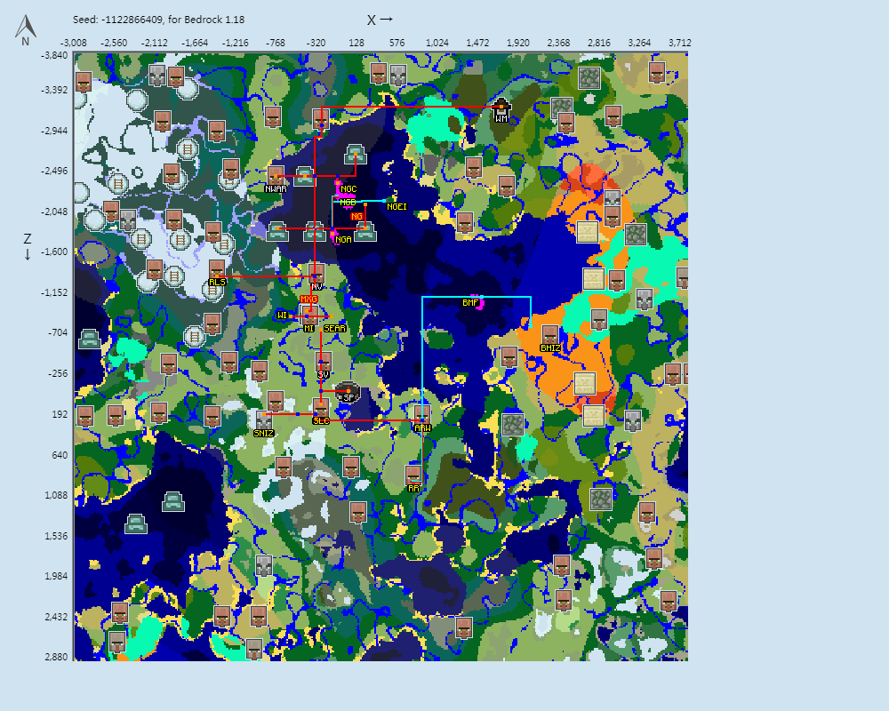

我们是
Minecraft社会主义联合公社，平时主要使用缩写UMSC指代
英文：the Union of Minecraft Socialist Commune (缩写：UMSC)
俄文：Союз Майнкрафт Социалистическая Коммуна (缩写：СМСК)
我们的红色象征
服务器内截图

不必担心您的安全
对于服务器内你的财产安全，不必担心，
机器人白名单和日志插件会守护你财产的安全。
并且对于你一些贵重物品的丢失，我们也会一查到底。
别来无恙啊
服务器内交流氛围很好，
但为了方便你了解我们的话和更好的交流，
建议你先去了解一下服务器内最新的梗和过去的一些历史大事。
同时，请你务必遵守新人守则内的一些规定，
相信我们会有一段美好的共同回忆的。
如果想要了解目前白名单内各成员和梗，请转至“人文”页面查看
蓬勃发展的地区

- 铭鑫格勒地区 (MXG) 为服内历史最悠久的地区之一，
境内文物较多。该地区主要分为三部分：主岛，西岛和东南自治区。 主岛主要为公用设施区域，有很多自取物资；西岛为服内最大的农业区， 目前处于较高速的扩张期；而东南自治区则以建筑为长，建有群玉阁等大型建筑。 - 南方地区主要由两部分组成，
西南工业区 (SNIZ) 及其从属地区南疆 (SLC) ，垦荒工人自治区 (ARW) 和岩岭 (RR) 地区。 该区域内人口都较为稀少，但工业能力较强，以西南工业区和岩岭见长。 南疆和垦荒工人自治区则都处于发展的早期，未来应该会有较大发展，如果发展道路畅通。 - 蘑菇岛地区也主要有两部分组成，新格里布哥罗德 (NG) 和西南工业区飞地。
新格里布哥罗德为服内人口最集中的地区之一，工业能力亦比较强， 在经历多舛的历史后，新格里布哥罗德正成为最重要的地区之一。 西南工业区飞地是工业设施集中地，比如猪人塔等。 - 巴库工业区 (BHIZ) 是服内的老工业区。目前新区内有非常多平地尚待开发。
期待能重建巴库过去的荣光。巴库是服内主要的骨粉出产地，以及主要的史莱姆相关产品出产地。 - 革命广场地区 (RLS) 也是服内人口较为集中的地区之一。
目前正在积极推进新区等大型建筑建设。同时也是未来规划比较明晰的地区， 规划建有轻轨线路，别墅区等功能性建筑。革命广场亦是我服工业较强的地区之一，有着320快速熔炉组等设施。
如果想要了解更多关于各个地区，请转至“地区”页面查看